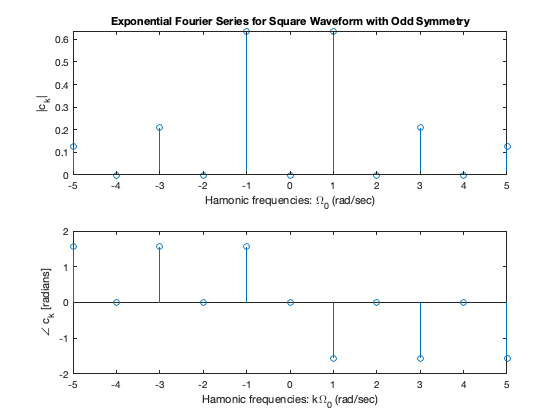
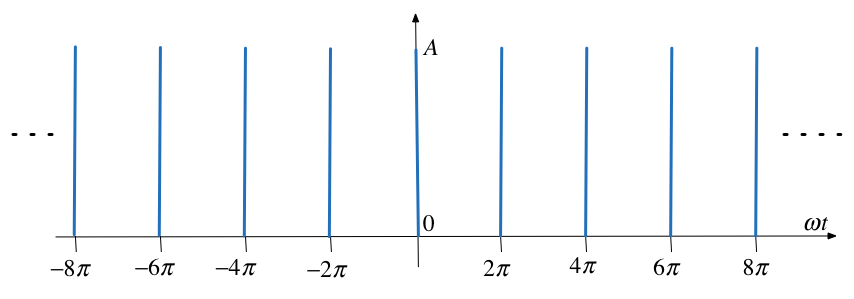
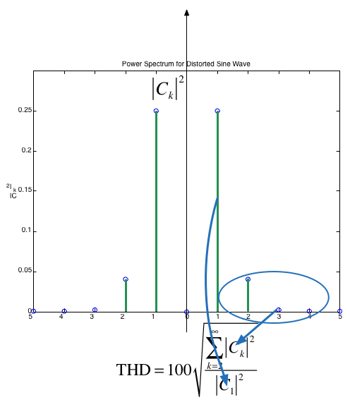

Unit 4.3: Line Spectra and their Applications#
Colophon#
An annotatable worksheet for this presentation is available as Worksheet 11.
The source code for this page is fourier_series/3/exp_fs2.ipynb.
You can view the notes for this presentation as a webpage (HTML).
This page is downloadable as a PDF file.
This section concludes our introduction to Fourier Series.
In the last section we saw that we could exploit the complex exponential \(e^{j\omega t}\) to redefine trigonometric Fourier Series into the Exponential Fourier Series and in so doing we eliminate one integration and at the same time simplify the calculation of the coefficients of the Fourier series.
In this section we show how the Exponential form of the Fourier Series leads us to the ability to present waveforms as line spectra which simplifies the calculation of power for systems with harmonics and leads in the limit as ùëá approaches infinity to the Fourier Transform.
Agenda#
Line spectra
Power in periodic signals
Steady-state response of an LTI system to a periodic signal
Harmonic frequencies#
In response to a Student query, I have given a little more information on Harmonic Frequencies in the FAQs.
Line Spectra#
The use of line spectra diagrams is a useful way to visualize the harmonic frequency components of a peiodic signal.
In MATLAB, the easiest way to plot this is using a stem plot of the lines, representing the FS coefficients, plotted against \(k\).
Line Spectra for Exp. FS#
When the Exponential Fourier series are known it is useful to plot the amplitude and phase of the harmonics on a frequency scale.
This is the spectrum of the Exponential Fourier Series calculated last time
Line Spectra for Trig. FS#
If we take the results for the Exponential Fourier Series and gather terms, the amplitudes for the Trig. Fourier Series are given by:
Applying this to the previous result we get

Example 3#
Compute the exponential Fourier series for the waveform shown below and plot its line spectra.

Solution#
The recurrent rectangular pulse is used extensively in digital communication systems. To determine how faithfully such pulses will be transmitted, it is necessary to know the frequency components.
What do we know?
The pulse duration is \(T/w\).
The recurrence interval \(T\) is \(w\) times the pulse duration.
\(w\) is the ratio of pulse repetition time to the pulse duration – normally called the duty cycle.
Coefficients of the Exponential Fourier Series?#
Given
Is the function even or odd?
Does the signal have half-wave symmetry?
What are the cosequencies of symmetry on the form of the coefficients \(C_k\)?
What function do we actually need to integrate to compute \(C_k\)?
Practice here. Solutions at bottom of section.
DC Component?#
Let \(k = 0\) then perform the integral
Harmonic coefficients?#
Integrate for \(k\ne 0\)
Exponential Fourier Series?#
Effect of pulse width on frequency spectra#
let’s see what effect the duty cycle \(w\) has on the spectra.
Recall pulse width = \(T/w\) and plot the complex line spectra for pulse with width \(w\) which repeats every \(T\) seconds. We will write a MATLAB function pulse_fs to simplify the computation.
clear all
cd ../matlab
format compact
%%file ../matlab/pulse_fs.m
function [f,omega] = pulse_fs(A,w,range)
% PULSE_FS compute fourier series spectrum in range
% -range:range for pulse with
% height A, period T and width duty cycle w.
omega = -range:range;
for mm = 1:length(omega)
x = omega(mm)*pi/w;
if omega(mm) == 0
f(mm) = A/w;
else
f(mm) = (A/w)*sin(x)/(x);
end
end
return
Created file '/Users/eechris/code/src/github.com/cpjobling/eg-247-textbook/fourier_series/matlab/pulse_fs.m'.
w = 2#
\(\Omega_0 = 1\) rad/s; \(w = 2\); \(T = 2\pi\) s; \(T/w = \pi\) s.
Compute Fourier Series
A = 1; w = 2;
[f,omega] = pulse_fs(A,w,15);
Plot line Spectrum and add add continuous \(\mathrm{sinc}(x)\) envelope.
stem(omega,f)
title('Line Spectra for pulse with w=2')
hold on
om = linspace(-15,15,1000);
xlabel('\Omega_0 [rad/s]')
xc = om.*pi./w;
plot(om,(A/w)*sin(xc)./(xc),'r:')
hold off

w = 5#
\(\Omega_0 = 1\) rad/s; \(w = 5\); \(T = 2\pi\) s; \(T/w = \pi\) s.
A = 1; w = 5; [f,omega] = pulse_fs(A,w,15);
stem(omega,f)
title('Line Spectra for pulse with w=5')
hold on
om = linspace(-15,15,1000);
xlabel('\Omega_0 [rad/s]')
xc = om.*pi./w;
plot(om,(A/w)*sin(xc)./(xc),'r:')
hold off

w = 10#
\(\Omega_0 = 1\) rad/s; \(w = 10\); \(T = 2\pi\) s; \(T/w = \pi\) s.
A = 1; w = 10; [f,omega] = pulse_fs(A,w,15);
stem(omega,f)
title('Line Spectra for pulse with w=10')
hold on
om = linspace(-15,15,1000);
xlabel('\Omega_0 [rad/s]')
xc = om.*pi./w;
plot(om,(A/w)*sin(xc)./(xc),'r:')
hold off

Implications#
As the width of the pulse reduces the width of the freqency spectra needed to fully describe the signal increases
more bandwidth is needed to transmit the pulse.
Note
Text book seems to get the wrong results. Karris plots \(\sin(wx)/(wx)\) rather than \(\sin(x/w)/(x/w)\) in producing the diagrams shown in Figs. 7.36—7-38.
However, if you view \(\sin(wx)/wx\) as in indication of the bandwidth needed to transmit a pulse of width \(T/w\) the plots Karris gives make more sense.
Example 4#
Use the result of Example 1 to compute the exponential Fourier series of the impulse train \(\delta(t\pm 2\pi k)\) shown below
Solution#
To solve this we take the previous result and choose amplitude (height) \(A\) so that area of pulse is unity. Then we let width go to zero while maintaining the area of unity. This creates a train of impulses \(\delta(t\pm 2\pi k)\).
and, therefore
Try it!
Proof!#
From the previous result,
and the pulse width was defined as \(T/w\), that is
Let us take the previous impulse train as a recurrent pulse with amplitude
Pulse with unit area#
The area of each pulse is then
and the pulse train is as shown below:

New coefficents#
The coefficients of the Exponential Fourier Series are now:
and as \(\pi/w \to 0\) each recurrent pulse becomes a unit impulse, and the pulse train reduces to a unit impulse train.
Also, recalling that
the coefficents reduce to
That is all coefficients have the same amplitude and thus
Spectrum of Unit Impulse Train#
The line spectrum of a sequence of unit impulses \(\delta(t \pm kT)\) is shown below:

Another Interesting Result#
Consider the pulse train again:
What happens when the pulses to the left and right of the centre pulse become less and less frequent? That is what happens when \(T \to \infty\)?
Well?#
As \(T\to \infty\) the fundamental frequency \(\Omega_0 \to 0\)
We are then left with just one pulse centred around \(t=0\).
The frequency difference between harmonics also becomes smaller.
Line spectrum becomes a continous function.
This result is the basis of the Fourier Transform which is coming next.
Power in Periodic Signals#
In your previous courses you may have come across the definitions of Signal Energy, Average Signal Power and Root Mean Square Power:
Parseval’s Theorem#
Parseval’s Theorem states that the total average power of a periodic signal \(f(t)\) is equal to the sum of the average powers of all its harmonic components.
The power in the \(k\)th harmonic \(C_ke^{jk\Omega_0 t}\) is given by
Since \(P_k = P_{-k}\), the total power of the \(k\)th harmomic is \(2P_k\).
You should note that \(|C_k| = \sqrt{C_k C_k^*}\) so \(|C_k|^2 = C_k C_k^*\).
Parseval’s theorem states that
RMS Power#
By a similar argument:
Example 5#
Compute the average power of a pulse train for which the pulse width is \(T/2\) (duty cycle 50%). Use the previous result:
as your starting point.
Power Spectrum#
The power spectrum of signal is the sequence of average powers in each complex harmonic:
For real periodic signals the power spectrum is a real even sequence as
A = 1; w = 8; [f,omega] = pulse_fs(A,w,15);
Power spectrum
stem(omega,abs(f).^2)
title('Power Spectrum for pulse width T/8')
ylabel('|C_k|^2')
xlabel('\Omega_0 [rad/s]')

Note that most of the power is concentrated at DC and in the first seven harmonic components. That is in the frequency range \([-14\pi/T,+14\pi/T]\) rad/s.
Total Harmonic Distortion#
Suppose that a signal that is supposed to be a pure sine wave of amplitude A is distorted as shown below

This can occur in the line voltages of an industrial plant that makes heavy use of nonlineear loads such as electric arc furnaces, solid state relays, motor drives, etc (E.g. Tata Steel!)
THD Defined#
Clearly, some of the harmonics for \(k\ne \pm 1\) are nonzero. One way to characterize the distortion is to compute the ratio of average power in all the harmonics that “should not be present”, that is for \(k > 1\), to the total average power of the distorted sine wave. The square-root of this ratio is called the total harmonic distortion (THD) of the signal.
If the signal is real and based on a sine wave (that is odd), then \(C_k=0\) and
and we can define the THD as the ratio of the RMS value for all the harmonics for \(K>1\) (the distortion) to the RMS of the fundamental which is $\(\sqrt{2\left|C_1\right|^2}:\)$
Computation of THD#
Steady-State Response of an LTI System to a Periodic Signal#
The response of an LTI system with impulse response \(h(t)\) to a complex exponential signal \(e^{st}\) is the same complex exponential multiplied by a complex gain: \(y(t) = H(s)e^{st}\), where:
In particular, for \(s = j\omega\), the output is simply \(y(j\omega t)=H(j\omega)e^{j\omega t}\).
The complex functions \(H(s)\) and \(H(j\omega)\) are called the system’s transfer function and frequency response, respectively.
By superposition#
The output of an LTI system to a periodic function with period \(T\) represented by a Fourier series is given by:
where \(\Omega_0 = T/2\pi\) is the fundamental frequency.
Thus \(y(t)\) is a Fourier series itself with coefficients \(D_k\):
Implications of this important result#
The effect of an LTI system on a periodic input signal is to modify its Fourier series through a multiplication by its frequency response evaluated at the harmonic frequencies.
Illustration#
This picture below shows the effect of an LTI system on a periodic input in the frequency domain.

Further explanation#
I have added some additional notes on Filter Attenuation in the FAQs.
Filtering#
A consequence of the previous result is that we can design a system that has a desirable frequency spectrum \(H(jk\Omega_0)\) that retains certain frequencies and cuts off others.
We will return to this idea later.
Summary#
Summary
Line spectra
Power in periodic signals
Steady-state response of an LTI system to a periodic signal
Answers#
Given
Is the function even or odd? even \(f(t) = f(-t)\)!
Does the signal have half-wave symmetry? No!
What are the cosequencies of symmetry on the form of the coefficients \(C_k\)? \(C_k\) will be real values. Trig. equivalent no sine terms.
What function do we actually need to integrate to compute \(C_k\)? We only need to integrate between the limits \(-\pi/w \to \pi/w\)
Solution: DC component!#
or
Harmonic coefficients!#
Exponential Fourier Series!#
Solution 5#
\(w = 2\) so:
Write down an expression for \(P\) using Parseval’s Theorem
P#
sinc\((k\pi/2) = 0\) for \(k\) even (\(k=0,2,4,6,\ldots\)) so…?
P for k odd#
\(\sin(k\pi/2) = 1\) for \(k\) odd (\(k=1,3,5,7,\ldots\)) so…?